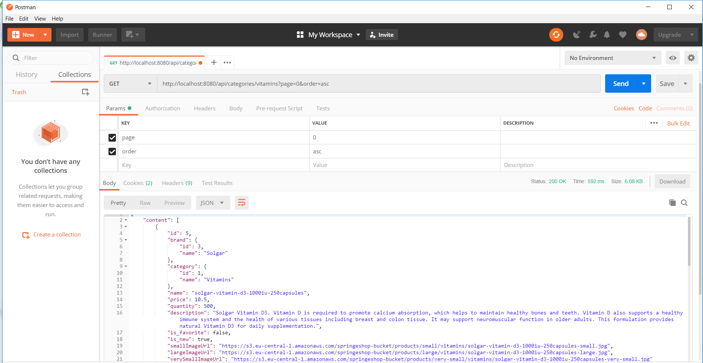
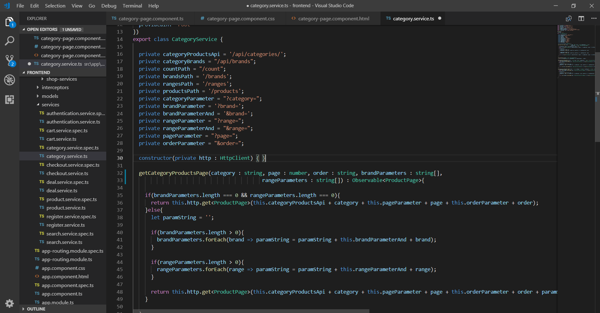
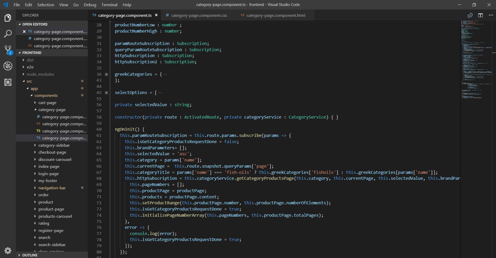
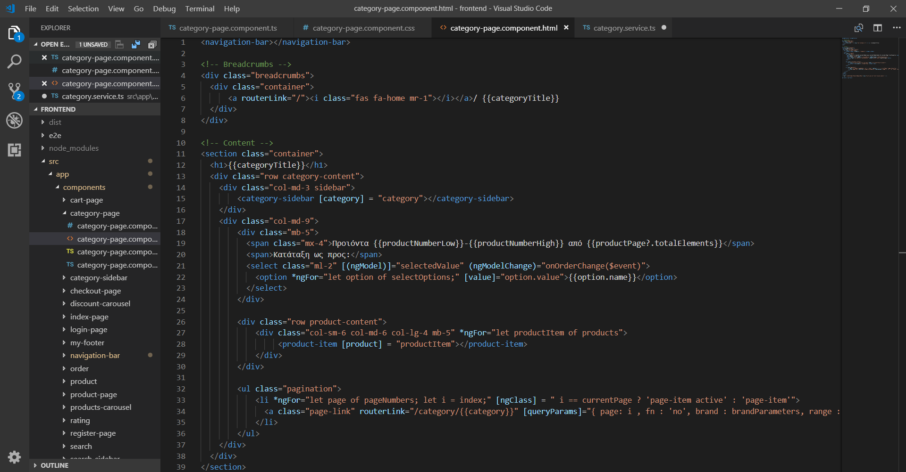
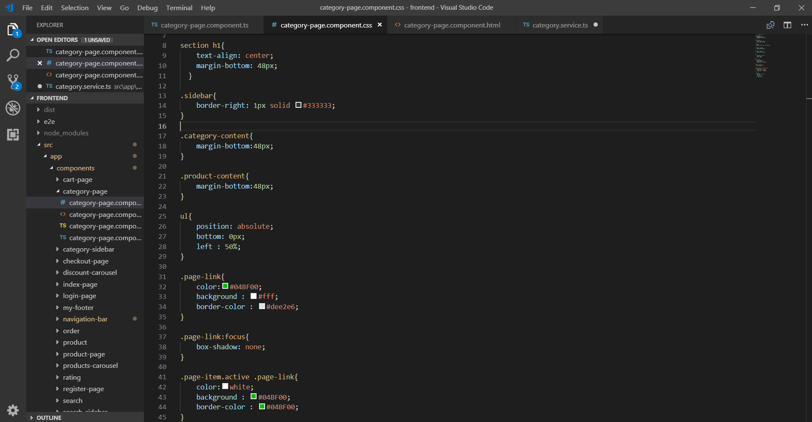

Θα δημιουργήσουμε το Angular - register-page component component, στο οποίο ο χρήστης θα πραγματοποιεί την εγγραφή του, αφού συμπληρώσει τα στοιχεία του σε μια φόρμα.
Δημιουργούμε ένα UserRepository στο springeshop.repositories.
package springeshop.repositories;
@Repository
public interface UserRepository extends JpaRepository<User, Integer> {
User findById(int id);
User findByUsername(String userName);
User findByEmail(String email);
}
Δημιουργούμε τα UserService και UserServiceImpl στο springeshop.service .
package springeshop.service;
public interface UserService{
User findById(int id);
User findByUsername(String userName);
User findByEmail(String email);
boolean doesEmailExist(User user);
boolean doesEmailExist(String userEmail);
boolean doesUserExist(User user);
boolean doesUserExist(String username);
Uboolean addUserAndIsSuccess(User user);
}
package springeshop.service;
@Service("userService")
@Transactional
public class UserServiceImpl implements UserService{
@Autowired
private UserRepository userRepository;
@Override
public User findByUsername(String userName) {
return userRepository.findByUsername(userName);
}
@Override
public User findByEmail(String email) {
return userRepository.findByEmail(email);
}
@Override boolean addUserAndIsSuccess(User user) {
boolean isSuccess = false;
try {
userRepository.save(user);
isSuccess = true;
} catch (DataAccessException exception) {
System.out.println(exception);
isSuccess = false;
}
return isSuccess;
}
@Override
public boolean doesUserExist(User user) {
return findByUsername(user.getUsername()) != null;
}
@Override
public boolean doesEmailExist(User user) {
return findByEmail(user.getEmail()) != null;
}
@Override
public boolean doesUserExist(String username) {
return findByUsername(username) != null;
}
@Override
public boolean doesEmailExist(String userEmail) {
return findByEmail(userEmail) != null;
}
@Override
public User findById(int id) {
return userRepository.findById(id);
}
}
Δημιουργούμε ένα AuthorityRepository στο springeshop.repositories.
package springeshop.repositories;
@Repository
public interface AuthorityRepository extends JpaRepository<Authority, Integer> {
Authority findByUser(User user);
}
Δημιουργούμε τα AuthorityService και AuthorityServiceImpl στο springeshop.service .
package springeshop.service;
public interface UserService{
boolean saveAuthorityAndIsSuccess(Authority authority);
}
package springeshop.service;
@Service("authorityService")
@Transactional
public class AuthorityServiceImpl implements AuthorityService{
@Autowired
private AuthorityRepository authorityRepository;
@Override boolean saveAuthorityAndIsSuccess(Authority authority) {
boolean isSuccess = false;
try {
authorityRepository.save(authority);
isSuccess = true;
} catch (DataAccessException exception) {
System.out.println(exception);
isSuccess = false;
}
return isSuccess;
}
}
Παράδειγμα αιτήματος με Postman
Δημιουργούμε το component category-page και το τοποθετούμε στο φάκελο components. Το όνομα της κατηγορίας το παιρνάμε χρησιμοποιώντας ένα routerLink, το οποίο λέει στην Angular, να αλλάξει route.
<a class="nav-link" routerLink="/category/{{category.englishName}}">{{category.greekName}}</p></a>
ng generate component category-page
Θα χρησιμοποιήσουμε τη μέθοδο getCategoryProductsPage() του ProductService, για να πραγματοποιήσουμε το HTTP αίτημα και να πάρουμε το προϊόντα.
Κάθε φορά που αλλάζει ο χρήστης κατηγορία, παίρνουμε το όνομα της κατηγορίας από το route και πραγματοποιούμε το HTTP αίτημα, για να πάρουμε τα προϊόντα.
category-page.component.ts
category-page.component.html
Εισάγουμε τα template <navigation-bar> και μετά εμφανίζουμε τον τίτλο της κατηγορίας. Μετά, στην αριστερή στήλη τοθετούμε το template <category-sidebar> του CategorySidebarComponent, το οποίο θα δημιουργήσουμε μετά και στην δεξιά <product-item> templates, για να εμφανίσουμε τα προϊόντα. Τέλος, εισάγουμε τα template <my-footer>
category-page.component.css
